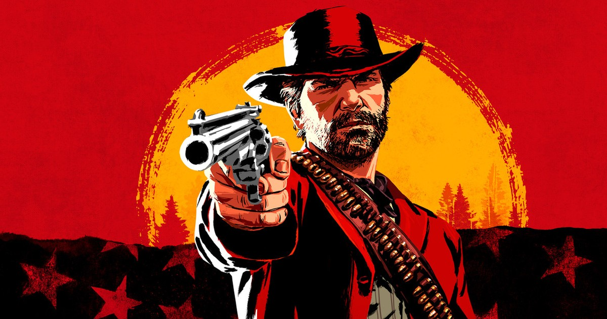

Rockstar is reportedly shopping a Red Dead Redemption movie — and the rights alone cost $100 million
Rockstar has reportedly opened the door to a Red Dead Redemption film or TV adaptation — with the licensing rights alone floated at more than $100 million. GTA, meanwhile, is still firmly off the table.

Disclosure: this post contains affiliate links. I earn a commission on qualifying purchases.
Hollywood has wanted a piece of Rockstar for years, and Rockstar has said no every single time. Now, according to a new report, the door is finally cracking open — just not for the game you'd expect. The Ankler reports that Rockstar is more open to bringing Red Dead Redemption to film or television, while Grand Theft Auto remains firmly off the table despite years of interest from studios.
The number is what makes this one land. An agent who works with writers in the video game space told The Ankler that Rockstar had, at one point, floated a minimum of more than $100 million for the licensing rights alone — before a single frame is shot or a single actor is cast. For scale, Amazon reportedly paid around $250 million in 2017 for the global television rights to The Lord of the Rings. Red Dead's asking price is in that same neighborhood, and it buys nothing but the right to try.
What actually exists right now: a report, not a deal
Nothing has been announced, and nothing is close to being announced. No studio, producer, or talent is attached to any Red Dead project, and the report doesn't say whether Rockstar would prefer a film or a series — or whether it wants an adaptation of one of the games or an all-new story set in the same universe. Rockstar did not respond to The Ankler's request for comment.
That matters because the history here is a long list of no's. Rockstar has turned down Hollywood on GTA for as long as anyone has asked, and the company's position has always been that the games make far more money than any adaptation ever could. A television writer put it bluntly to The Ankler: the amount Rockstar makes on its games far dwarfs anything Hollywood could make them by adapting them. GTA 6 just proved the point again — the biggest entertainment launch in history, billions in days.
So why is Red Dead different? The report doesn't say what changed Rockstar's mind, and that's the honest gap in the story. What it does establish is a shift in posture: multiple sources say the company is more receptive to a screen version of its Western series than it has ever been, and the $100 million figure was real enough to be floated in actual discussions.
Why the price tag is the story
The $100 million is for the rights alone, and it's a floor, not a ceiling. Any studio that pays it still has to fund the production on top — and a Western on the scale Red Dead demands, with the period detail and the landscapes the games are famous for, would not come cheap. The success of Taylor Sheridan's Yellowstone universe has shown there is a real appetite for big Western television, but nothing about this report ties Sheridan or any particular filmmaker to the project.
The franchise itself is the draw. Red Dead Redemption 2, released in 2018, is one of the best-selling and most acclaimed games ever made, and the series has sold more than 118 million copies across its entries. Arthur Morgan and the Van der Linde gang are characters a studio could build a whole slate around — the outlaw story, the dying West, the gang falling apart from the inside. It is, on paper, the most adaptable story Rockstar owns.
The GTA contrast
The same report that opens the door for Red Dead slams it shut for GTA. Rockstar is still not interested in a Grand Theft Auto movie, and that has been the company's consistent position for years. Take-Two's CEO said just last week that the company would consider a GTA film if the right idea came around — but "consider it" is a long way from the active shopping the Red Dead report describes, and no GTA project exists.
That split makes sense if you think about it as risk. GTA is Rockstar's crown jewel and its most valuable property; a bad movie does nothing for a franchise that prints money on its own. Red Dead is beloved, but it has been quiet since 2018 — no new installment, no sequel announced. A prestige adaptation is a way to keep the series alive in the culture without committing to another decade-long development cycle.
What happens next
Nothing, most likely, for a while. A $100 million minimum for rights alone narrows the field of buyers to a handful of studios and streamers, and any deal would still need Rockstar and Take-Two to agree on creative control — the thing that has killed every GTA conversation before it started. The report reads less like a deal announcement and more like a trial balloon: Rockstar testing whether Hollywood is serious, and at what price.
But the signal is real. The most adaptation-resistant studio in games is now, reportedly, naming its price for its second-biggest franchise. If a studio pays it, the Van der Linde gang rides again — just not on a console.
Sources: Rockstar reportedly seeking $100M for Red Dead Redemption movie and TV rights (Dexerto) · Rockstar is reportedly interested in a Red Dead Redemption film or TV show (Video Games Chronicle) · A Rockstar Game Could Be Coming to Hollywood, and It's Not GTA 6 (Polygon) · 'Red Dead Redemption' $100M USD Live-Action Adaptation Update (Hypebeast) · Report: Rockstar prices Red Dead movie rights at over $100 million (TweakTown)
Gear up: Razer — mice, keyboards, headsets and laptops.